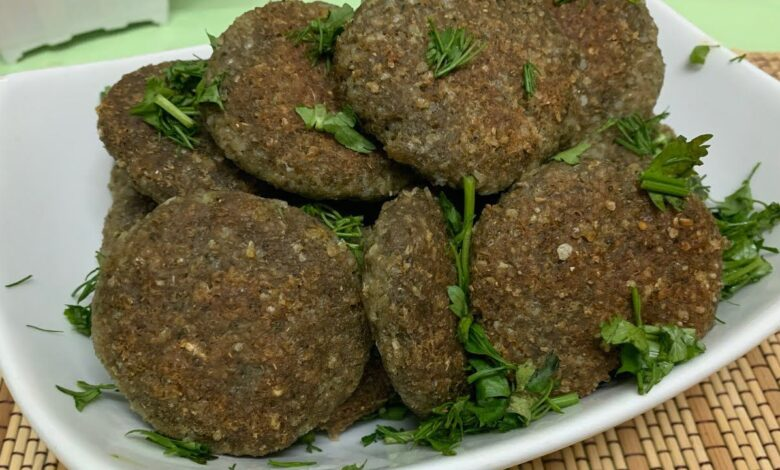

KABABI
Ingredients:
- 500g ground beef
- 2kg white rice
- 2 midium sized oninons
- 2 garlic strips
- salt, black pepper, cumin
Steps:
- crush rice into semi fine powder, to make blending easier later
- blend rice, meat, onions and garlic into a heavy green paste, that will be the
base of the Kababi
- add seasoning and give a quick blend
- fry some of the meat on low heat to use as filling for the kababi
- form paste into an ellipse shape, and add fried meat in center
- throw kababi in boiling water WITHOUT stirring, only stir after water has
started boiling again, for 15 minutes
- fry in oil after boiling
- la3alo yotmor